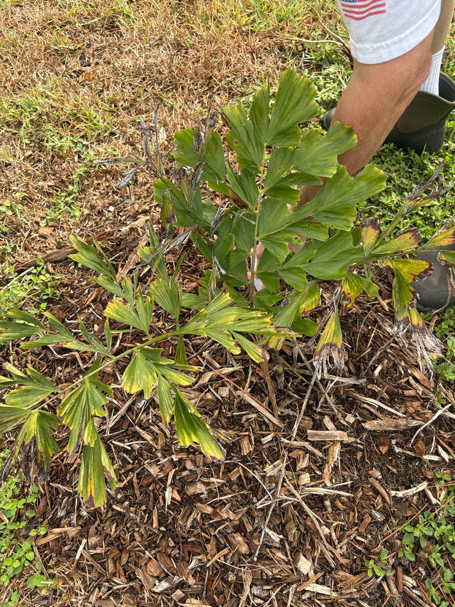

- This palm flowers exactly once — then dies. The flowering sequence is the slow-motion finale of its entire life: blooms open first at the very top of the trunk, and then each successive cluster appears one node lower over a span of several years, ticking downward like a terminal countdown. When the lowest spike finishes fruiting, the entire tree dies.
- The trunk is among the hardest wood produced by any palm — even power tools such as chainsaws struggle to cut through it. That density is part of what makes a removed specimen an extraordinary logistical problem.
- Each massive frond is bipinnate — divided twice — making fishtail palms the only palms in the world with fully twice-compound leaves. Every other palm on the planet produces fronds that are either fan-shaped or divided just once along a central rib.
- In southern China, where the species is a nationally protected plant, the Dulong people of northwest Yunnan traditionally fell mature palms to harvest the starch-rich trunk pith, processing it into a sago substitute used to bake a heavy traditional staple cake called baba.
The Giant Fishtail Palm is native to a rugged sweep of Southeast Asian mountain forests running from Arunachal Pradesh in northeastern India through Myanmar, Thailand, Laos, and Vietnam, extending into southern Yunnan Province of China.
It is highly specialized to humid tropical and subtropical highlands, often anchored directly into limestone soils at elevations between about 1,600 and 6,000 feet above sea level.
The species was first formally described by British botanist William Griffith in the mid-nineteenth century from a specimen collected in northeastern India, with the description published in his Palms of British East India around 1845 to 1850.
Due to rapid deforestation and habitat fragmentation across its native montane range, China has designated the palm as a grade-two nationally protected species to regulate wild harvesting.
Introduced to Florida's specialty nursery trade as an architectural showpiece, it is prized by botanical gardens and estate collectors for the dramatic scale of its trunk and canopy. It thrives as a well-behaved exotic in the state's warmest coastal zones, showing no aggressive tendency to naturalize or escape into surrounding native ecosystems.
- The genus name Caryota comes from the Greek and Latin word for 'date' or 'palm fruit'; the species epithet obtusa is Latin for 'blunt' or 'obtuse,' referring to the distinctively blunt, jagged-edged tips of the leaflets. That tip shape is one of the clearest ways to pick out a fishtail palm at a glance.
- The needle-like crystals hidden inside the fruit flesh are calcium oxalate raphides — microscopic, double-pointed structures that mechanically pierce human skin and mucous membranes on contact. This acts as a highly effective evolutionary deterrent against premature mammalian foraging, which is why the fruit causes such intense burning with no warning.
- On Caryota obtusa, fronds can reach four to six meters long and nearly as wide, with a roughly triangular overall outline.
- Because the fronds of Caryota obtusa project outward nearly horizontally rather than drooping — and can individually span several meters — the palm depends on exceptionally thick, fibrous petiole bases that clamp tightly around the trunk to anchor each frond against wind load. These rigid, fiber-wrapped cuffs are part of what makes canopy cleanup so demanding once a frond finally dies.
- While the palm carries both male and female flowers on the same inflorescence, cross-pollination is enforced by timing: the male flowers on each stalk open and shed pollen completely before the neighboring female flowers on that same stalk become receptive. This protandrous strategy means the tree must rely on insects to ferry pollen between separate specimens.
The massive, drooping inflorescences — each potentially several meters long and bearing thousands of small yellowish flowers — attract a variety of generalist insects when in bloom. Flowers are arranged in triads, with each female flower flanked by two males, and the palm is monoecious, meaning both sexes appear on the same inflorescence. Any tree in active bloom is a short-term insect buffet.
As a non-native palm with no evolutionary history with Florida's fauna, Caryota obtusa does not function as a larval host for local butterflies or moths. The ripe fruits are taken by birds and other wildlife in its native Asian range, but fruit drop at this specimen also warrants some caution — see the safety note below.
Caryota obtusa is monocarpic: it reproduces once and then dies. After years of vegetative growth, the palm begins its terminal flowering sequence, producing one inflorescence per year in a strict top-to-bottom order. When the lowest inflorescence has ripened its fruit, the tree has completed its life cycle. Propagation is by seed only.
Inflorescences are large, drooping, and heavily branched, reaching three to six meters in length, and emerge from the leaf axils along the trunk in a descending sequence over several years. Flowers are yellowish and unisexual, arranged in triads of one female flanked by two males.
Male flowers open before female flowers on the same inflorescence, a timing strategy that encourages cross-pollination.
Globular drupes roughly 1 to 1½ inches in diameter, ripening from green through yellow to reddish. The fruit pulp contains dense concentrations of calcium oxalate raphides — needle-like crystals — that cause severe skin and mouth irritation on contact. Do not handle ripe fruit with bare hands.
Bipinnate (twice-compound) — the only palm genus with this leaf type. Fronds are triangular in overall outline, four to six meters long and more than three meters wide, with 18 to 22 primary divisions per side, each itself carrying rows of wedge-shaped, obliquely triangular leaflets with blunt, toothed-crenate tips. Petioles are one to two meters long and carry dark marginal fibers.
Unlike most other Caryota species, the fronds of obtusa tend to spread outward and somewhat horizontally rather than drooping, which gives the crown an especially open, geometric quality.
Solitary, cylindrical, pale gray to light brown, and marked by evenly spaced ring-like leaf scars about 8 to 12 inches apart. The upper trunk near the crown is covered by a thin dark fibrous tomentum where old leaf bases persist. The trunk is often slightly swollen at mid-height and is supported at the base by a cone of aerial prop roots.
The wood is exceptionally hard — notably difficult even for power tools to cut through.
Step back to the edge of the path and cast your eyes all the way up to the skyline. Notice how the massive fronds don't droop like a typical palm — they project outward almost horizontally, forming a wide, open geometric lattice against the sky.
Then move in close and examine a single leaflet: it has the signature jagged, irregular silhouette with a blunt tip rather than a tidy point, which is the fishtail family's calling card.
Finally, scan the trunk from top to bottom — if this palm has entered its terminal flowering phase, you will see a sequence of enormous, mop-like inflorescences working their way down the trunk, one node at a time, in a slow-motion countdown toward the tree's end.
The fruit pulp is densely packed with calcium oxalate raphides — microscopic needle-like crystals that cause intense burning and dermatitis on contact with skin and serious irritation to the mouth and throat if ingested. Never handle ripe fruit without gloves. Dogs and cats that chew on the fruit can develop swelling and inflammation of the mouth.
The same crystals are present throughout the plant but are most concentrated in the fruit flesh. The trunk pith has been eaten as a starch source in the palm's native range after proper processing, but the raw fruit is not a food source and should be left alone.
The name Caryota gigas circulates widely in horticulture and you may see it on nursery tags — it is a synonym for Caryota obtusa and refers to the same species. Kew's Plants of the World Online treats gigas as a synonym, not a separate taxon.
Caryota obtusa is listed as a nationally protected species in China (grade two), where deforestation has reduced populations in the wild. Specimens in botanical gardens like this one serve a quiet conservation role alongside their ornamental one.
Cold tolerance is meaningful for Central Florida: Palmpedia lists a cold tolerance of roughly 27 degrees F for this species, which makes it one of the more cold-hardy fishtail palms and a reasonable choice for Bradenton's USDA Zone 9b to 10a climate — though hard freezes remain a threat to young plants.
For home gardeners growing this species, canopy maintenance requires extra caution. Dead fronds do not drop cleanly on their own and must be sawn away; the leaf bases are lined with a dense matrix of stiff, dark, hair-like fibers that can irritate bare skin, so heavy canvas gloves and long sleeves are strongly recommended during any pruning work.

- © Randall Carter (CC-BY-NC), via iNaturalist